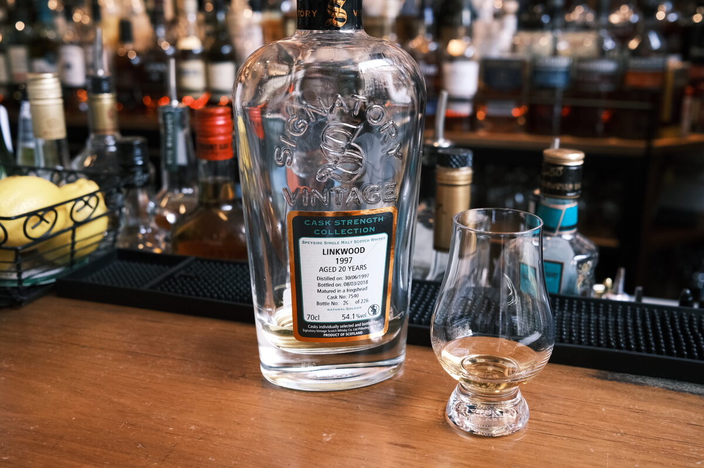

Linkwood 1997 Signatory Vintage 20 years 54.1% (hogshead)
An older Linkwood. One of Signatory’s cask strength bottlings.
Colour Light gold.
Nose As expected, floral. Waxy malt. It’s very malty. Buttery, vanilla custard. A slice of cake. Boiled lollies. With water, blueberries and lemon curd. More flowers.
Palate Very sweet — toffee, toffee apples. Orchard fruits. Oak spices, cinnamon and cloves. Some white chocolate. Lemon curd. A little bit stemmy, astringent. Thick mouthfeel. With water, the toffee is even stronger.
Finish Caramel, toffee. Quite herbal, very floral. Werther’s Originals. Long, sweet, warming. With water, oak, and a little tannic.
Comments Solid. Floral and very sweet. Water is recommended. 86/100.

Posted by Dominic on 01 Jun 2021